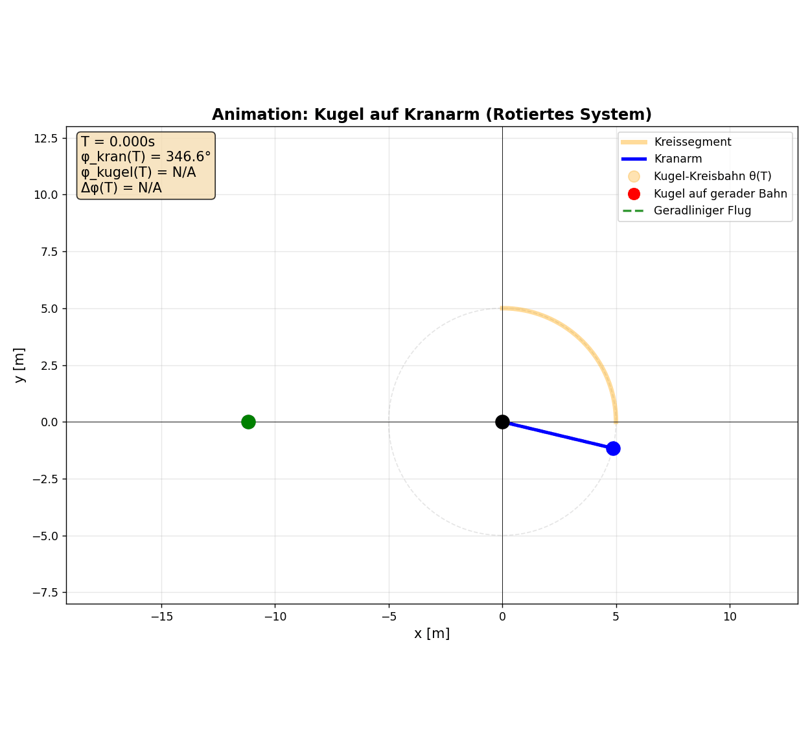

Über das Projekt
Placeholder / Diese Website dokumentiert die Analyse von Filmszenen aus Fast X oder Tenet
Interaktive Parametrisierte Berechnungspipeline
3D Farbkodiertes Scatterplot zur Visualisierung von Dom's Spielraum für eine erfolgreiche Mission
Matplotlib Resultate
Animation der Kugel-Kranarm-Kollision mit film-ähnlichen, unrealistischen Werten
